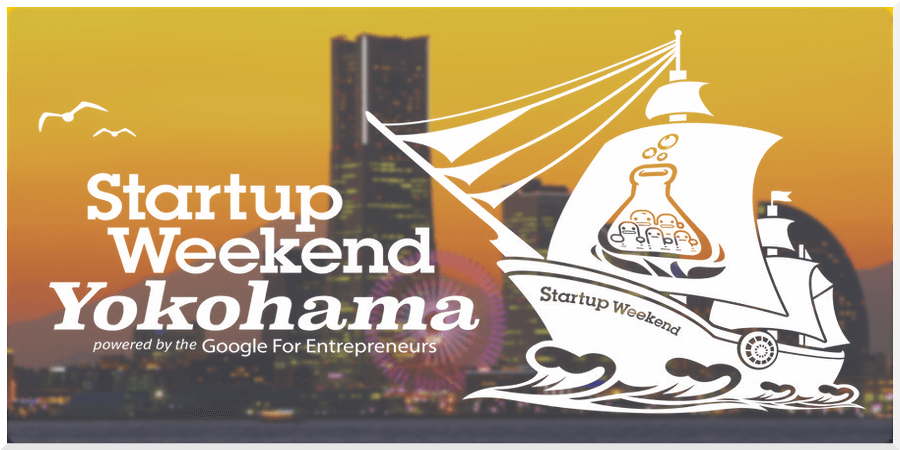

第3回 StartupWeekend横浜

2015/04/24(金) 〜 2015/04/26(日)
富士ゼロックス株式会社 神奈川県横浜市西区みなとみらい3丁目6番1号 みなとみらいセンタービル4F
スタートアップウィークエンドってなに？
スタートアップウィークエンド（SW）とは、あたらしいなにかをつくりだす「スタートアップ体験イベント」です。週末だけであなたは、アイディアをカタチにするための方法論を学び、スタートアップをリアルに経験することができます。
SWは金曜の夜、みんながアイディアを発表するピッチから始まります。そしてハスラー・ハッカー・デザイナーでチームを組み、日曜の午後までに、ユーザーエクスペリエンスに沿った必要最小限のビジネスモデルを一気に作り上げます。ハスラーはマネジメントと顧客開発を、ハッカーは機能の開発を、デザイナーは使いやすいデザインを担当します。
そして、大切なのは、この3日間でイベントが終わるだけではなく、始まりだということです。是非、それを体感しにお越し下さい！ 忘れられない3日間となるでしょう。しかし、どんな3日間にするかはあなた次第。 皆様にお会いできるのを楽しみにしております！！

schedule
2015/04/24 19:00 〜 2015/04/26 20:30
1日目（金曜日）チーム作り
18:30受付開始19:00パーティー・スタート（軽食）20:00参加者によるアイディア・プレゼンテーション21:00アイディア投票21:30チームビルディング・作業開始22:001日目終了
この日にアイデアがある方は1分間でアイデアピッチをしていただきます。そして、投票を行い、選抜後のアイデアでチームを編成し、初日は終了です。
2日目（土曜日）チーム作業
09:30オープン・朝食・作業開始12:00昼食14:00コーチング18:00夕食22:002日目終了
3日目（日曜日）最終プレゼン
09:30オープン・朝食・作業開始12:00昼食15:00最終プレゼンテーション・準備17:00最終プレゼンテーション・スタート18:00授賞式19:30アフターパーティー
最終日。午後のプレゼンに向けて最終仕上げをしていきます。午後からは審査員の前で各チームプレゼンをしていただきます。
staff
ファシリテーター

石原 吉浩 (Yoshihiro Ishihara)
大手通信サービス会社に入社以来、一貫してヘルスケア業界での新規事業を手掛ける。数々の失敗を積み重ね、新規事業への情熱を失いかけた時に顧客開発に出会い、再度新規事業への情熱を取り戻す。2012年2月に起業。 切れ味鋭い土下座外交が持ち味。業界きっての『ことなかれ主義』で有名。ニックネームは「ぐんだん」。
オーガナイザー

朝倉 雅博 (Masahiro Asakura)
ニックネームは「リリー」。
video
参加者密着の動画（山形の制作会社さんに作って頂きました。） 20分位の動画なのですが、3日間のドキュメンタリーとしてすごい面白いです！
是非、一度ごらんになってください
info
©
Startup Weekend Yokohama